Alcoolul, cel mai mortal drog legal
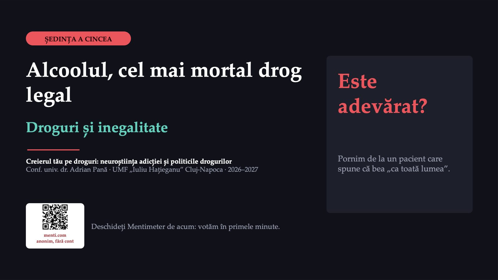
1 / 46Bine ați venit la a cincea ședință. Titlul face o afirmație tare: alcoolul ar fi cel mai mortal drog legal. O verificăm azi pe un pacient, pe doi frați și pe o țară care a încercat ceva. Trei acte, trei decizii, votate anonim pe Mentimeter; linkul e și în chat. Pornim de la un pacient.
Luni dimineață, în Județul B
![ACTUL ÎNTÂI · CABINETUL DIN JUDEȚUL B Luni dimineață, în Județul B DOMNUL M., CINCIZECI ȘI PATRU DE ANI Lucrător pe șantier. De două săptămâni: ochii galbeni, abdomenul mărit, a slăbit. Medicul de familie îl trimite în aceeași zi în unitatea de primiri urgențe, cu bilet de trimitere. Scrisoarea medicală de la spitalul județean: boală hepatică legată de alcool. „Dar eu nu sunt alcoolic. Beau doar în weekend, ca toată lumea.” Ce faceți azi și ce întrebări îi puneți? Caz construit pentru curs; detaliile sunt plauzibile, nu reale.](diapozitive/C05/002.jpg) 2 / 46
2 / 46Actul întâi. Sunteți în stagiu la cabinetul de medicină de familie dintr-o comună din Județul B. Domnul M. are cincizeci și patru de ani și lucrează de treizeci de ani pe șantiere. Vine adus de soție: de două săptămâni are ochii galbeni, abdomenul i s-a mărit și a slăbit. Medicul de familie îi explică soției că semnele pot indica o boală gravă de ficat și îl trimite în aceeași zi în unitatea de primiri urgențe, cu bilet de trimitere. Două zile mai târziu, scrisoarea medicală de la spitalul județean pomenește o boală hepatică legată de alcool. Domnul M. nu înțelege: „Beau doar în weekend, ca toată lumea.” Cazul este construit pentru curs, dar fraza lui conține tema ședinței. Gândiți-vă ce ați face voi azi și ce întrebări i-ați pune.
Pe jumătate.
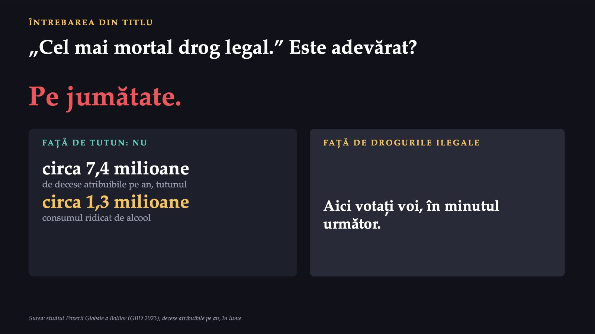
3 / 46Fraza domnului M. pornește de la o idee răspândită. Mulți oameni nu socotesc alcoolul un drog, pentru că îl cumpără de la magazinul din colț, îl primesc la nunți și îl văd pe masa de sărbători. Titlul ședinței spune însă că alcoolul este cel mai mortal drog legal. Verdictul provizoriu, dat de la început: pe jumătate. Față de tutun, afirmația nu rezistă. Pe cadrul comun al studiului Poverii Globale a Bolilor (GBD 2023), tutunul are circa 7,4 milioane de decese atribuibile pe an, iar consumul ridicat de alcool, circa 1,3 milioane. Cât de mortal este alcoolul față de drogurile ilegale decideți voi, în votul care urmează. Restul ședinței explică de unde vin aceste cifre și de ce alcoolul nu ucide la fel de mult în toate grupurile sociale.
Alcoolul față de toate celelalte droguri la un loc: câți mor într-un an?
![MENTIMETER · VOTUL 1 PRIMA DECIZIE · SINGURI, FĂRĂ DISCUȚIE Alcoolul față de toate celelalte droguri la un loc: câți mor într-un an? După raportul OMS din 2024, cu date din 2019. Drogurile: toate drogurile psihoactive în afară de alcool și tutun (opioide, cocaină, canabis, amfetamine și altele). A Drogurile ucid mai mulți decât alcoolul. B Aproximativ la fel de mulți. C Alcoolul ucide de circa patru ori mai mulți. D Alcoolul ucide de peste zece ori mai mulți. Răspundeți pe telefon, la codul afișat. menti.com anonim, fără cont](diapozitive/C05/004.jpg) 4 / 46
4 / 46Prima decizie. Votați singuri pe Mentimeter, înainte să citiți chatul. Întrebarea se sprijină pe raportul Organizației Mondiale a Sănătății (OMS) din 2024, cu date din 2019: câți oameni mor într-un an din cauza alcoolului, față de toate celelalte droguri psihoactive la un loc, în afară de tutun? Prin droguri înțelegem aici opioidele, cocaina, canabisul, amfetaminele și altele.
Alcoolul față de toate celelalte droguri la un loc: câți mor într-un an?
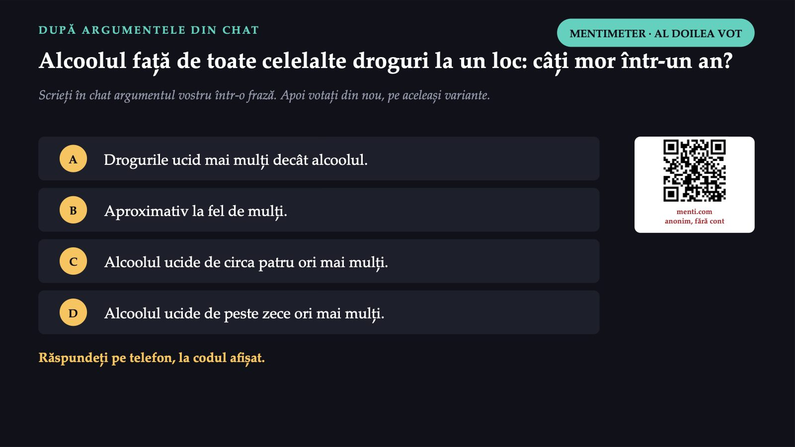
5 / 46Al doilea timp al aceleiași decizii. Scrieți în chat, într-o frază, de ce credeți că varianta voastră se potrivește cu cifrele, și citiți argumentele celor care au votat altfel; încercați să-i convingeți. Apoi votați din nou, pe aceleași variante. Explicația vine după al doilea vot.
Răspunsul apare după ședință
Răspunsul apare după ședință
Răspunsul apare după ședință
Răspunsul apare după ședință
Răspunsul apare după ședință
Răspunsul apare după ședință
13%
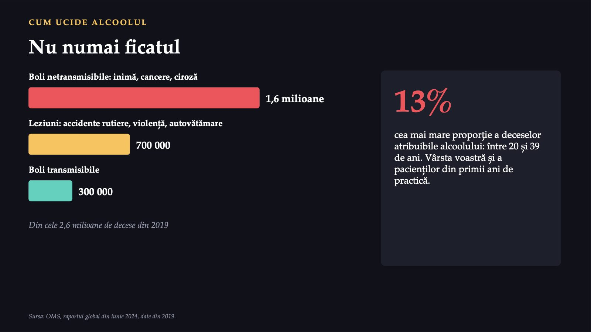
9 / 46Cum mor oamenii din cauza alcoolului? Nu numai prin ficat. Din cele 2,6 milioane de decese din 2019, 1,6 milioane au fost prin boli netransmisibile: boli de inimă, cancere, ciroză. Alte 700 000 au fost prin leziuni, adică accidente rutiere, violență și autovătămare, iar 300 000, prin boli transmisibile. O cifră vă privește direct. Cea mai mare proporție a deceselor atribuibile alcoolului, 13%, a fost la oamenii între 20 și 39 de ani: vârsta voastră și a pacienților voștri din primii ani de practică. Am folosit deja de câteva ori cuvântul „atribuibil”. Este primul termen nou al ședinței.
Decesul atribuibil alcoolului
 10 / 46
10 / 46Primul termen nou: decesul atribuibil alcoolului. La nivelul unei populații, el înseamnă numărul de decese dintr-un an care nu s-ar fi produs dacă expunerea la alcool ar fi fost zero, estimat cu un model statistic. În cuvinte obișnuite: partea din toate decesele dintr-o boală pe care o datorăm alcoolului. Cifra de 2,6 milioane nu este, deci, o sumă de certificate de deces pe care scrie „alcool”. Pe certificatul domnului M., dacă boala lui ar evolua prost, ar putea scrie „ciroză hepatică”. Pentru un cancer de sân sau pentru un accident rutier, alcoolul poate să nu apară deloc pe certificat, deși a contribuit. Modelul nu spune care deces anume se datorează alcoolului: estimează ce parte din fiecare boală i se datorează și adună aceste părți. De aceea, cifra are o marjă de incertitudine.
Alcoolul, cel mai mortal drog legal
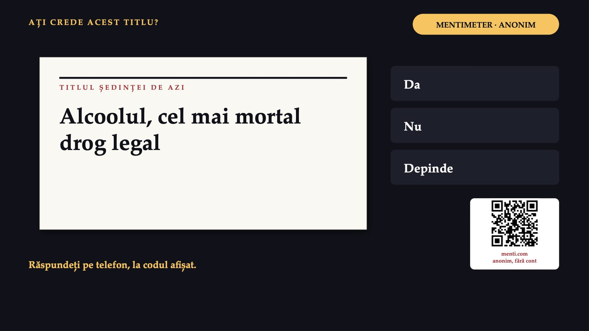
11 / 46Punem acum titlul ședinței sub aceeași întrebare ca orice titlu de presă: l-ați crede? Votați anonim pe Mentimeter: da, nu sau depinde. Gândiți-vă la cele două jumătăți ale afirmației: comparația cu drogurile ilegale și comparația cu celălalt drog legal, tutunul.
O jumătate rezistă, cealaltă nu
 12 / 46
12 / 46Prima jumătate a titlului, că alcoolul ucide mai mult decât drogurile ilegale, este susținută de raportul OMS din 2024. A doua jumătate, că ar fi cel mai mortal dintre drogurile legale, nu rezistă. Fișa OMS despre tutun, din iunie 2026, sprijinită pe estimările GBD 2023, spune că tutunul ucide peste 7 milioane de oameni pe an, inclusiv peste 1,6 milioane de nefumători expuși fumatului pasiv. Un titlu cinstit ar fi: „Alcoolul ucide mai mult decât toate celelalte droguri la un loc, în afară de tutun.” Este mai lung, dar rezistă la verificare. Diferența contează: un argument exagerat pierde încrederea publicului exact atunci când argumentul corect ar fi fost suficient. În policy brief veți face același exercițiu cu fiecare cifră.
4,4%
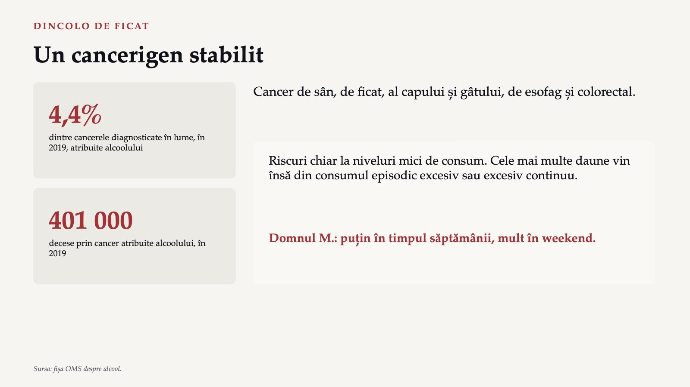
13 / 46Contează și ce face alcoolul în afara creierului. În prima ședință ați văzut cum acționează alcoolul în creier și cum a ajuns pe primul loc într-un clasament britanic al daunelor. Fișa OMS îl numește un cancerigen stabilit, care crește riscul de cancer de sân, de ficat, al capului și gâtului, de esofag și colorectal. În 2019, 4,4% dintre cancerele diagnosticate în lume și 401 000 de decese prin cancer au fost atribuite alcoolului. Tot fișa OMS spune că alcoolul poate aduce riscuri chiar la niveluri mici de consum, ceea ce contrazice credința că un pahar pe zi face bine. Cele mai multe daune vin însă din consumul episodic excesiv sau din consumul excesiv continuu. Asta ne duce la felul în care bea domnul M.: puțin în timpul săptămânii, mult la sfârșit de săptămână.
Pe ce loc este România, dintre aproape două sute de țări, la consumul de alcool înregistrat pe locuitor?
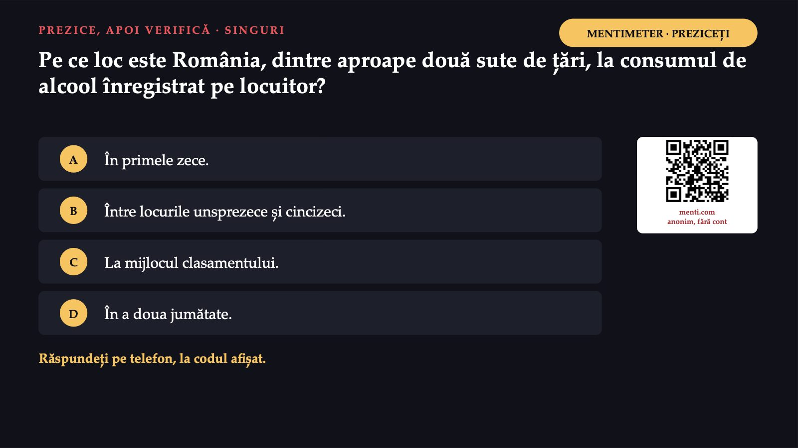
14 / 46Înainte de cifrele României, două estimări, fiecare singur, fără să căutați pe internet. Prima: pe ce loc credeți că se află România, dintre aproape două sute de țări, la consumul de alcool înregistrat pe locuitor? Alegeți varianta care vi se pare cea mai probabilă.
Câți adulți din România beau excesiv la o singură ocazie în fiecare săptămână?
15 / 46A doua estimare: câți adulți din România beau excesiv la o singură ocazie în fiecare săptămână? Prin „excesiv” înțelegem aici a bea mult într-o singură zi; definiția exactă vine imediat. După ce votați, scrieți estimarea voastră în chat și comparați-o cu ale celorlalți: vedeți cât de departe sunteți unii de alții.
Răspunsul apare după ședință
Răspunsul apare după ședință
Consumul episodic excesiv
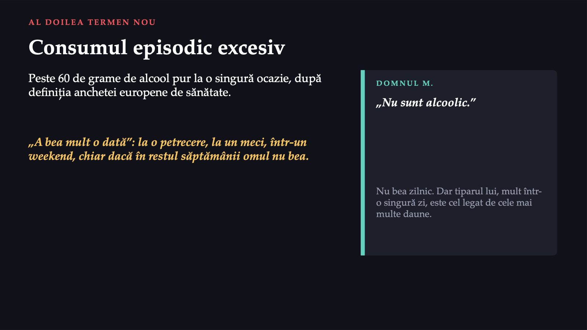
17 / 46Al doilea termen nou: consumul episodic excesiv. După definiția anchetei europene de sănătate, el înseamnă consumul a peste 60 de grame de alcool pur la o singură ocazie. În cuvinte obișnuite: a bea mult o dată, la o petrecere, la un meci sau la sfârșit de săptămână, chiar dacă în restul săptămânii omul nu bea. Domnul M. se încadrează exact aici. El nu bea zilnic și, de aceea, nu se consideră alcoolic. Dar modul lui de consum, mult într-o singură zi, este cel pe care OMS îl leagă de cele mai multe daune. Să vedem acum cât de răspândit este acest tipar în România.
Răspunsul apare după ședință
Răspunsul apare după ședință
Același cadru, o singură țară
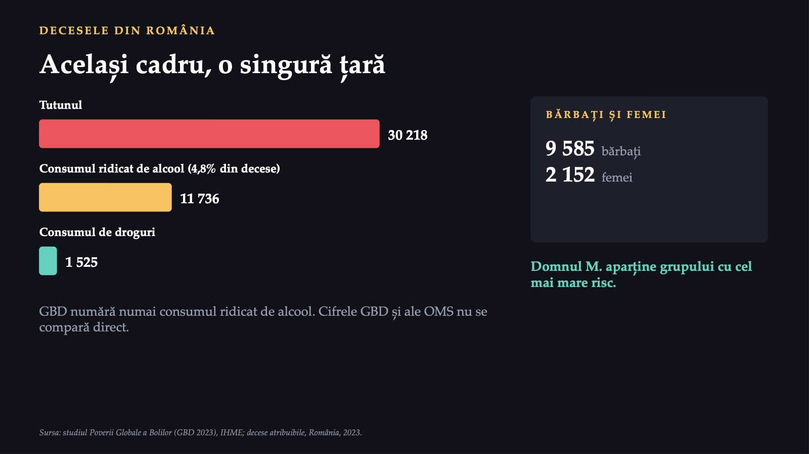
19 / 46Ce înseamnă asta în decese? Studiul Poverii Globale a Bolilor estimează că, în 2023, în România, 11 736 de decese au fost atribuibile consumului ridicat de alcool, adică 4,8% din toate decesele, față de 1 525 atribuibile consumului de droguri. Tutunul are, pe același cadru, 30 218. Estimarea are marja de incertitudine despre care vorbeam: pentru alcool, între 9 352 și 15 320 de decese. GBD numără numai consumul ridicat de alcool, nu orice consum; de aceea, cifrele lui sunt mai mici decât ale OMS, iar cele două surse nu se compară direct. Și în România, alcoolul este asociat cu de câteva ori mai multe decese decât drogurile. Diferența dintre bărbați și femei este mare: 9 585 de decese la bărbați și 2 152 la femei. Domnul M. aparține grupului cu cel mai mare risc.
De ce tratăm alcoolul altfel?
![ÎNTREBAREA FIȘEI De ce tratăm alcoolul altfel? LEGEA ȘI OBICEIUL Legal, făcut în gospodărie, prezent la nunți. Interpretarea notelor: un drog familiar sperie mai puțin. INTERESELE OMS: țările raportează o interferență continuă a industriei alcoolului în elaborarea politicilor. ROMÂNIA Fără strategie integrată; comitetul din 2015 n-a ajuns să funcționeze. Există accizele, reglementarea publicității, interdicția vânzării sub 18 ani. Drogurile ilegale: o lege penală și o agenție națională. Alcoolul: un număr limitat de măsuri. Surse: fișa OMS despre alcool; Ministerul Sănătății, analiza de situație (2026).](diapozitive/C05/020.jpg) 20 / 46
20 / 46Fișa disciplinei pune o întrebare directă: de ce tratăm alcoolul altfel decât celelalte droguri? Notele nu au o sursă care să cântărească motivele, dar pot aduna trei fapte verificabile; legătura dintre ele este o interpretare. Primul fapt ține de lege și de obicei: alcoolul este legal, se produce în gospodărie și face parte din ritualurile familiei. Un drog familiar sperie mai puțin, chiar dacă ucide mai mult. Al doilea ține de interese: fișa OMS notează că țările raportează o interferență continuă a industriei alcoolului în elaborarea politicilor. Al treilea ține de România: nu există încă o strategie integrată pentru alcool, iar comitetul creat în 2015 n-a ajuns să funcționeze. Există accizele, reglementarea publicității și interzicerea vânzării sub 18 ani. Pentru drogurile ilegale avem o lege penală și o agenție națională. Aceasta este asimetria din titlul fișei.
Ce îi spuneți mâine unui coleg
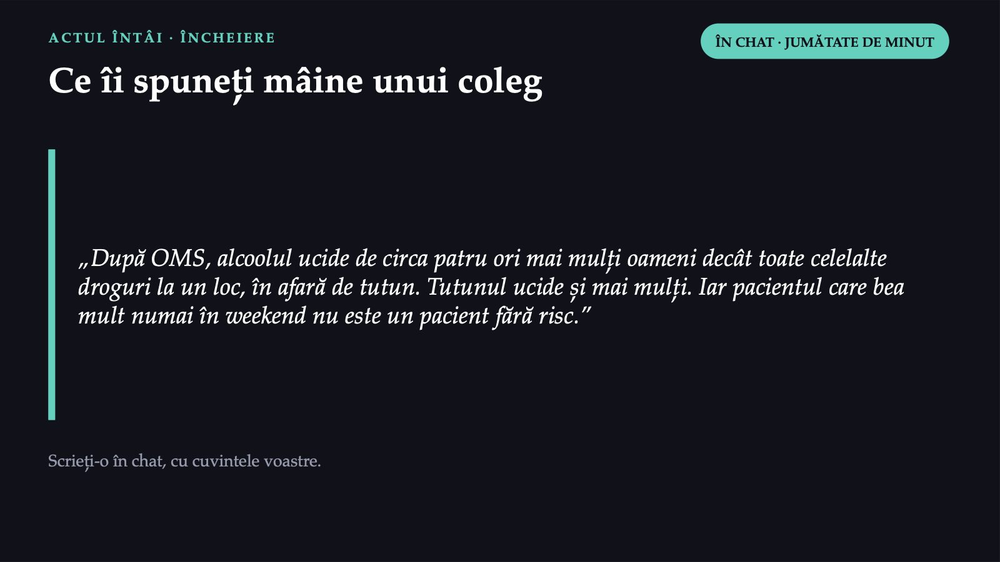
21 / 46Încheiem actul întâi cu o frază pentru colegul de mâine. După OMS, alcoolul ucide de circa patru ori mai mulți oameni decât toate celelalte droguri la un loc, în afară de tutun; tutunul ucide și mai mulți. Iar pacientul care bea mult numai la sfârșit de săptămână nu este un pacient fără risc. Scrieți-o în chat, cu cuvintele voastre.
Doi frați, același pahar
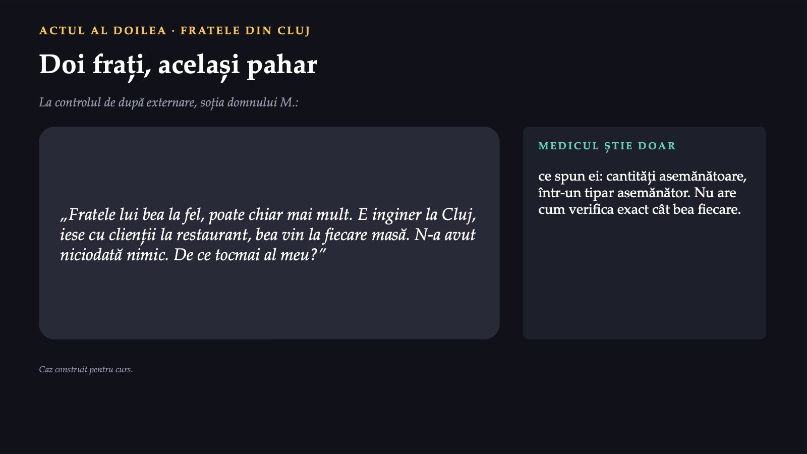
22 / 46Actul al doilea: fratele din Cluj. La controlul de după externare, soția domnului M. pune întrebarea pe care o aude des medicul de familie. Fratele lui, cu doi ani mai mare, e inginer la Cluj, iese cu clienții la restaurant și bea vin la fiecare masă. Bea la fel, poate chiar mai mult, și n-a avut niciodată nimic. „De ce tocmai al meu?” Medicul nu are cum verifica exact cât bea fiecare frate. Știe doar ce spun ei: cantități asemănătoare, într-un tipar asemănător. Și acest caz este construit pentru curs. Întrebarea soției este însă una pe care cercetarea a studiat-o serios, iar în actul acesta vedem ce a găsit.
Cei doi frați spun că beau cam la fel. Care explicație se potrivește cel mai bine?
 23 / 46
23 / 46A doua decizie, tot în doi timpi. Cei doi frați spun că beau cam la fel. Care explicație se potrivește cel mai bine cu ce știm despre oameni în situația lor? Citiți cu atenție cele patru variante; fiecare are o parte de plauzibilitate. Votați singuri pe Mentimeter, înainte să citiți chatul.
Cei doi frați spun că beau cam la fel. Care explicație se potrivește cel mai bine?
 24 / 46
24 / 46Al doilea timp. Scrieți în chat argumentul pentru varianta voastră și citiți-le pe ale celor care au votat altfel; încercați să-i convingeți. Întrebați-vă ce ar trebui să fie adevărat pentru ca varianta voastră să fie cea bună. Apoi votați din nou, pe aceleași variante.
Răspunsul apare după ședință
Răspunsul apare după ședință
Paradoxul daunelor alcoolului
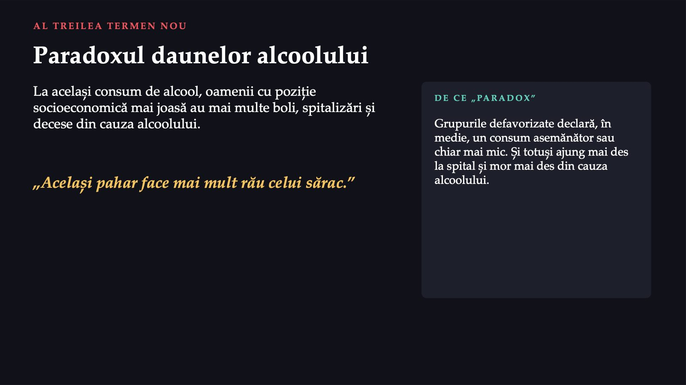
26 / 46Al treilea termen nou: paradoxul daunelor alcoolului. Este observația că, la același consum de alcool, oamenii cu poziție socioeconomică mai joasă au mai multe boli, spitalizări și decese din cauza alcoolului decât cei cu poziție mai înaltă. În cuvinte obișnuite: același pahar face mai mult rău celui sărac. De ce paradox? Pentru că cifrele par să se contrazică. Grupurile defavorizate declară, în medie, un consum asemănător sau chiar mai mic decât grupurile avantajate. Și totuși, cei săraci ajung mai des la spital și mor mai des din cauza alcoolului. Pentru cei doi frați, termenul descrie exact situația: cantități asemănătoare, urmări foarte diferite.
Răspunsul apare după ședință
Răspunsul apare după ședință
Răspunsul apare după ședință
Răspunsul apare după ședință
79
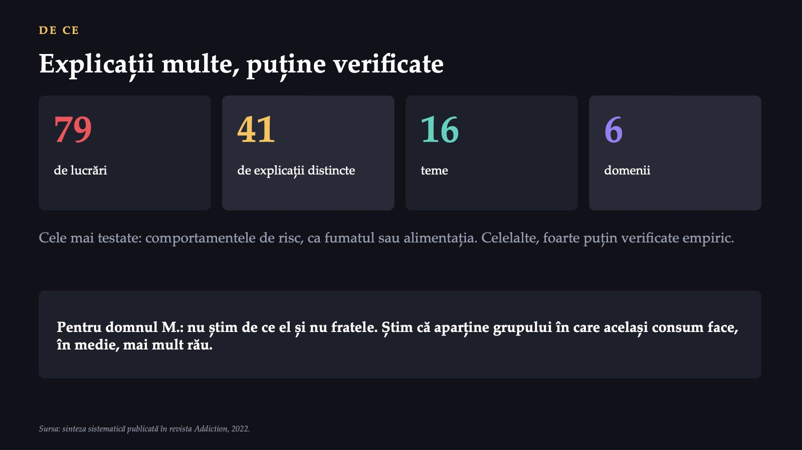
29 / 46Dacă nu e cantitatea, ce este? Sinteza sistematică publicată în 2022 în revista Addiction a adunat 79 de lucrări și a găsit în ele 41 de explicații distincte ale paradoxului, grupate în 16 teme și 6 domenii, de la individ și stil de viață până la venituri, politici și erori de măsurare. Cele mai multe lucrări au testat explicații legate de comportamentele de risc, ca fumatul sau alimentația; celelalte au fost foarte puțin verificate empiric. Pentru domnul M., asta înseamnă că nu putem spune exact de ce el s-a îmbolnăvit și fratele nu. Cine lucrează fizic de treizeci de ani, are venituri mai mici, ajunge mai târziu la medic și trăiește într-o comună fără specialist este expus la mai multe riscuri care se adună. Aceasta este o interpretare, nu un rezultat al unui studiu despre România.
Un gradient social inversat
![ROMÂNIA: CINE BEA Un gradient social inversat Câți nu beau deloc Bărbați, educație mai înaltă 14% Bărbați, educație mai scăzută 30% Femei, educație mai înaltă 34,8% Femei, educație mai scăzută 51% Fratele inginer: grupul în care mai puțini se abțin. Domnul M.: grupul în care, după studiile din alte țări, același consum face mai mult rău. Paradoxul în România? Nu știm: nicio serie publică a deceselor pe educație sau venit. Sursa: Ministerul Sănătății, analiza de situație pentru prevenirea consumului de alcool (2026).](diapozitive/C05/030.jpg) 30 / 46
30 / 46Ce știm despre România? Analiza de situație publicată de Ministerul Sănătății în 2026 descrie un gradient social inversat: oamenii mai educați se abțin mai rar de la alcool decât cei mai puțin educați. Dintre bărbații cu educație mai înaltă, 14% nu beau deloc, față de 30% dintre cei cu educație mai scăzută; la femei, proporțiile sunt de 34,8% și 51%. Fratele inginer se potrivește, deci, cu grupul în care mai puțini oameni se abțin. Domnul M. se potrivește cu grupul în care, după studiile din alte țări, același consum face mai mult rău. Dacă paradoxul se confirmă și în România, nu știm: notele nu au găsit o serie publică a deceselor prin alcool pe niveluri de educație sau de venit.
Comitetul din 2015 pornește. Ce finanțează?
![INSTRUMENTUL ȘEDINȚEI · CADRUL Comitetul din 2015 pornește. Ce finanțează? 1 Prețul și taxarea: accize, preț minim 2 Disponibilitatea: locuri și ore de vânzare, verificarea vârstei 3 Publicitatea: reclame, sponsorizări, promovare online 4 Intervențiile scurte la medicul de familie 5 Tratamentul tulburării de consum Din pachetul SAFER al OMS (2018), cu două schimbări: fără măsurile contra alcoolului la volan; intervențiile scurte despărțite de tratament. OMS: prețul și taxarea, „printre cele mai eficace și mai rentabile”. Un buget pe cinci ani. Surse: OMS, pachetul SAFER și fișa despre alcool; Ministerul Sănătății, analiza de situație (2026).](diapozitive/C05/031.jpg) 31 / 46
31 / 46Acum treceți de partea deciziei. Să presupunem că Ministerul Sănătății pune în funcțiune comitetul pentru politicile privind alcoolul, înființat în 2015. Comitetul are un buget pe cinci ani și trebuie să-l împartă între cinci tipuri de măsuri, toate din pachetul SAFER al OMS, lansat în 2018. Exercițiul lasă deoparte măsurile contra alcoolului la volan și desparte intervențiile scurte de tratament. Prima măsură: prețul și taxarea, prin accize mai mari sau un preț minim. A doua: disponibilitatea, adică locurile și orele de vânzare și verificarea vârstei. A treia: publicitatea. A patra: intervențiile scurte, în care medicul de familie întreabă fiecare pacient despre alcool și, la nevoie, are cu el o discuție scurtă și structurată. A cincea: tratamentul celor care au deja o tulburare de consum. Pentru OMS, prețul și taxarea sunt printre cele mai eficace și mai rentabile măsuri.
Împărțiți 100 de puncte între cele cinci măsuri
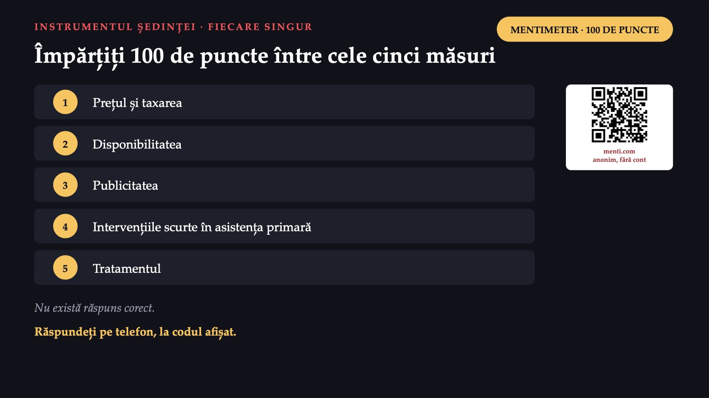
32 / 46Fiecare dintre voi împarte acum, pe Mentimeter, 100 de puncte între cele cinci măsuri, după propria judecată. Nu există o alocare bună și una greșită; contează ce alegeți și de ce. Gândiți-vă la domnul M. și la fratele lui: pe care dintre ei l-ar atinge fiecare măsură?
Trei profiluri, calculate dinainte
![INSTRUMENTUL ȘEDINȚEI · CONSECINȚELE Trei profiluri, calculate dinainte Profilul · Preț · Disp. · Publ. · Interv. · Trat. · Decese evitate din 1 000 · În cele mai defavorizate 40% Totul în tratament · 10 · 5 · 5 · 20 · 60 · 51 · 45% Împărțit egal · 20 · 20 · 20 · 20 · 20 · 66 · 50% Prețul întâi · 40 · 20 · 10 · 20 · 10 · 76 · 53% Valori ipotetice. O regiune ipotetică cu 1 000 de decese atribuibile alcoolului pe an; ponderi alese de autori pentru exercițiu. Cifrele nu provin din niciun studiu și nu se citează ca date. [media alocărilor voastre, din Mentimeter] menti.com anonim, fără cont](diapozitive/C05/033.jpg) 33 / 46
33 / 46Iată media alocărilor voastre, alături de trei profiluri calculate dinainte. Valorile sunt ipotetice: o regiune ipotetică are 1 000 de decese atribuibile alcoolului pe an, iar fiecare măsură are o eficiență construită pentru curs, cu ponderi alese de autori pentru exercițiu. Cifrele nu provin din niciun studiu și nu se citează ca date. În model, totul în tratament evită 51 de decese din 1 000, împărțirea egală 66, iar prețul întâi 76. Partea din beneficiu care ajunge la cele mai defavorizate 40% din comunități crește în același sens: 45%, 50% și 53%. Singura ancoră în OMS este locul aparte al prețului și al taxării; ordinea celorlalte măsuri nu vine din nicio sursă. Uitați-vă de care profil se apropie media voastră.
Ce ați sacrificat fără să vă dați seama?
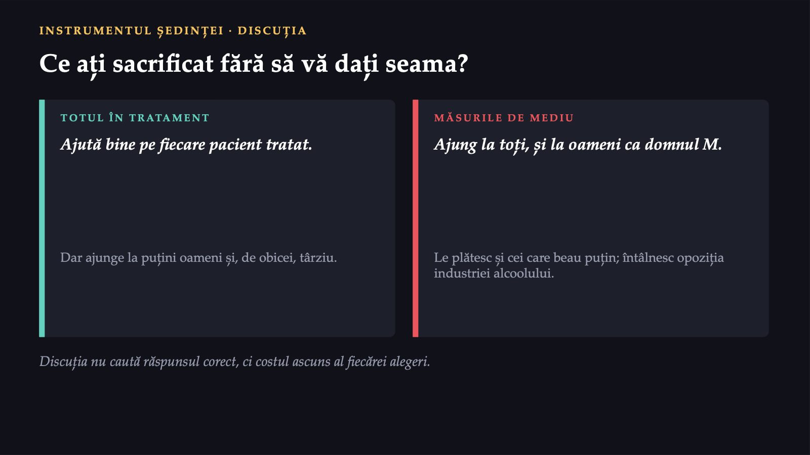
34 / 46Ce arată modelul, dincolo de cifrele lui inventate? Că alegerea care pare cea mai medicală, totul în tratament, ajută bine pe fiecare pacient tratat, dar ajunge la puțini oameni și, de obicei, târziu. Măsurile care schimbă mediul, adică prețul, disponibilitatea și publicitatea, ajung la toată populația, inclusiv la oamenii ca domnul M., care nu se consideră bolnavi și nu cer ajutor. Costul lor este altul: le plătesc și cei care beau puțin, iar ele întâlnesc opoziția industriei alcoolului. Discuția nu caută varianta corectă, ci costul ascuns al fiecărei alegeri. Gândiți-vă la propria alocare: ce ați sacrificat fără să vă dați seama?
Ce îi spuneți mâine unui coleg
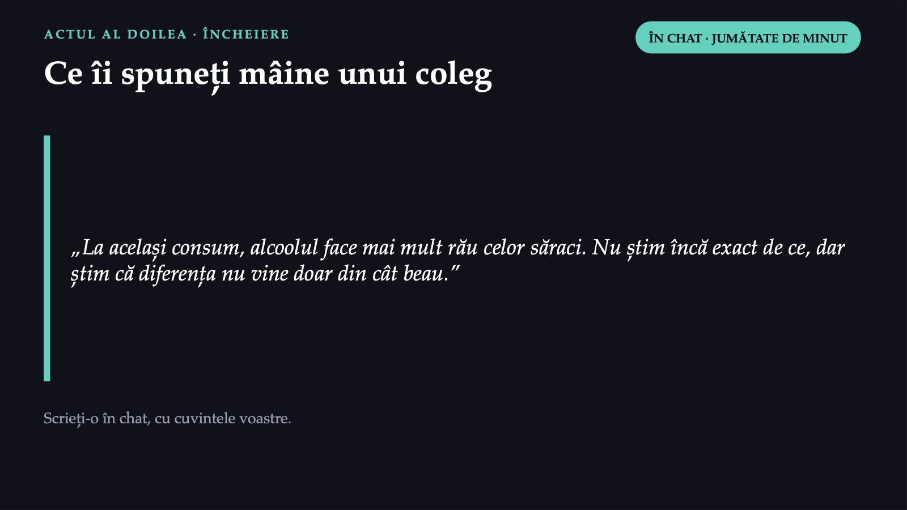
35 / 46Încheiem actul al doilea cu fraza pentru colegul de mâine: la același consum, alcoolul face mai mult rău celor săraci. Nu știm încă exact de ce, dar știm că diferența nu vine doar din cât beau. Scrieți-o în chat, cu cuvintele voastre.
Pauză
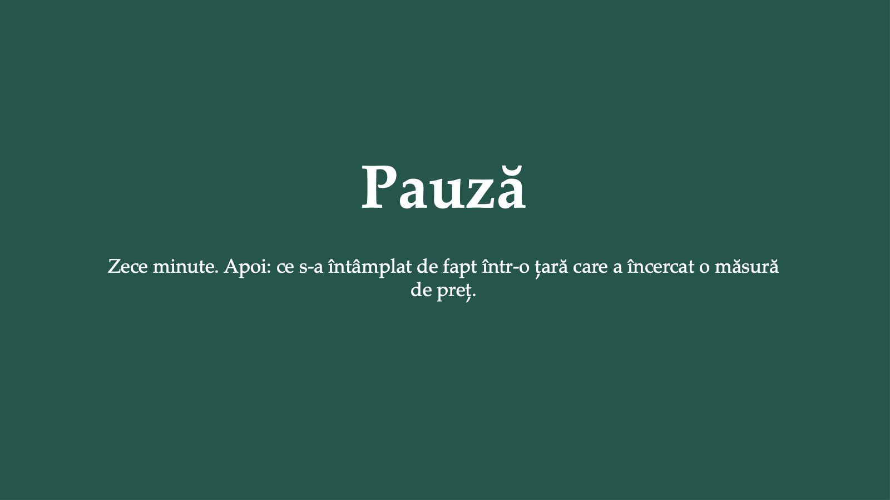
36 / 46Ne oprim puțin înainte de ultimul act. Când ne revedem: ce s-a întâmplat de fapt într-o țară care a încercat o măsură de preț. Păstrați-vă în minte alocarea celor 100 de puncte: o veți compara cu rezultatul real.
0,50 £
![ACTUL AL TREILEA · CE S-A ÎNTÂMPLAT DE FAPT Scoția, din 1 mai 2018: un preț minim 0,50 £ pe unitate de alcool, pentru orice băutură alcoolică vândută în Scoția Nu este o taxă: nu ridică prețul vinului scump de restaurant, ci numai al băuturilor foarte ieftine, vândute sub prag. 3% scăderea vânzărilor de alcool după introducere, în studiile anterioare Cazul domnului M. este construit. Întrebarea din actul al doilea are însă un deznodământ real. Surse: evaluarea publicată în The Lancet (2023) și studiile anterioare asupra vânzărilor.](diapozitive/C05/037.jpg) 37 / 46
37 / 46Actul al treilea. Cazul domnului M. este construit și nu are un deznodământ real. Întrebarea din actul al doilea are însă unul: s-a încercat undeva o politică de preț și s-a măsurat ce a produs? Da, în Scoția, țara studiului despre paradox. Din 1 mai 2018, orice băutură alcoolică vândută în Scoția are un preț minim de 0,50 lire sterline pe unitate de alcool. Măsura nu este o taxă: nu ridică prețul vinului scump de restaurant, ci numai prețul băuturilor foarte ieftine, care se vindeau sub acest prag. Studiile anterioare arătaseră că, după introducere, vânzările de alcool au scăzut cu 3%. Rămâne întrebarea care contează pentru sănătate: au scăzut și decesele?
Răspunsul apare după ședință
Răspunsul apare după ședință
Ce spune Scoția despre alegerea voastră
![COMPARAȚIA CU VOTUL VOSTRU Ce spune Scoția despre alegerea voastră „Totul în tratament”: s-a pierdut ceva, pentru că o măsură de preț ajunge la oameni care nu ar cere niciodată tratament. „Prețul întâi”: o confirmare parțială. NUMAI DECESELE „ÎN ÎNTREGIME” nu toate decesele la care alcoolul contribuie SCOȚIA NU ESTE ROMÂNIA acolo, vânzările au scăzut mai ales în magazine; aici, producția proprie scapă unui preț minim O ASOCIERE autorii o consideră un efect cauzal plauzibil, nu o certitudine Surse: The Lancet (2023); evaluarea vânzărilor după prețul minim.](diapozitive/C05/039.jpg) 39 / 46
39 / 46Comparăm acum alegerea voastră cu ce s-a întâmplat în Scoția. Dacă media alocărilor voastre a semănat cu profilul „Totul în tratament”, Scoția sugerează că s-a pierdut ceva: o măsură de preț ajunge la oameni care nu ar fi cerut niciodată tratament. Dacă ați ales „Prețul întâi”, evaluarea scoțiană vă dă o confirmare parțială. Trei limite trebuie spuse totuși. Studiul măsoară decesele produse numai de alcool, nu toate decesele la care alcoolul contribuie. Scoția nu este România: acolo, scăderea vânzărilor a venit mai ales din magazine, în timp ce la noi o parte din consum vine din producția proprie, la care un preț minim nu ajunge. Iar o asociere măsurată atent rămâne o asociere; autorii o consideră un efect cauzal plauzibil, nu o certitudine.
Doi tineri din Statele Unite fumează canabis la fel de des. Unul este alb, celălalt este de culoare.
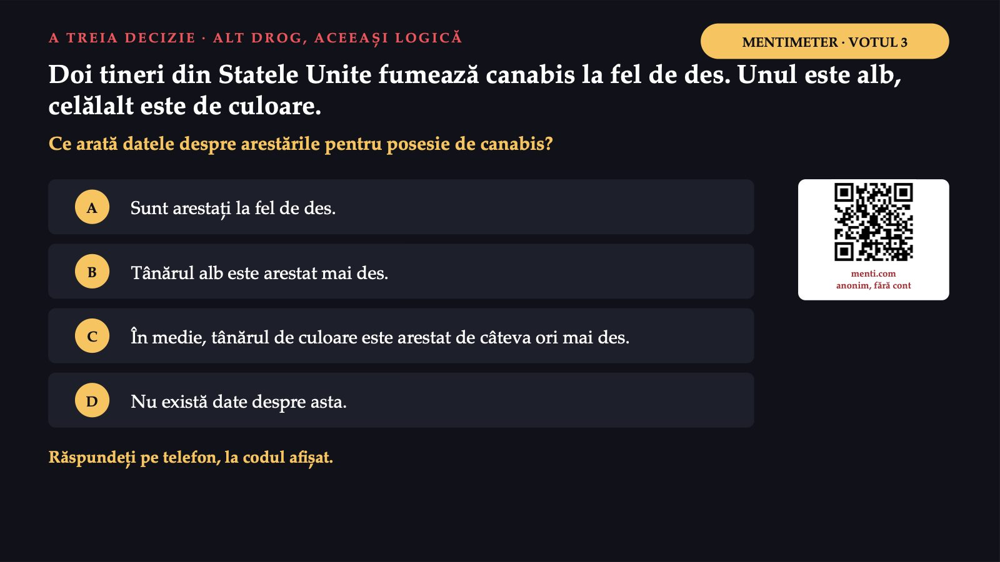
40 / 46A treia decizie, cu un singur vot. Aceeași logică, alt drog. Doi tineri din Statele Unite, de aceeași vârstă, fumează canabis la fel de des. Unul este alb, celălalt este de culoare. Ce arată datele despre arestările pentru posesie de canabis? Votați singuri și gândiți-vă la ce am discutat azi despre același consum și urmări diferite.
Răspunsul apare după ședință
Răspunsul apare după ședință
Ce știm și ce nu știm
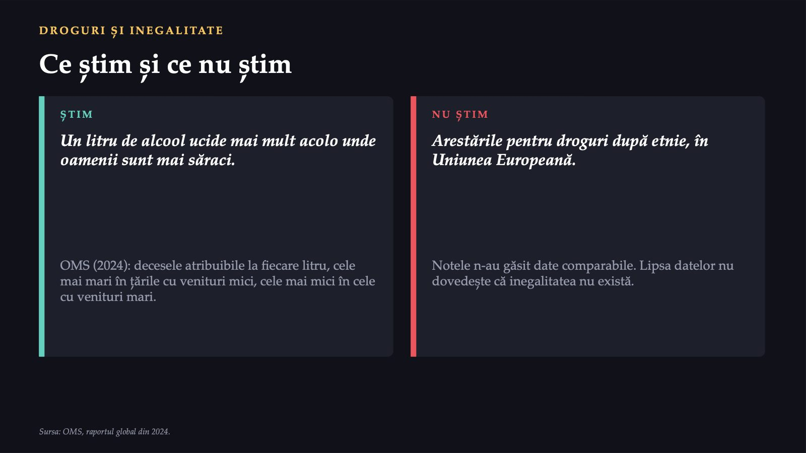
42 / 46Ce știm și ce nu știm despre droguri și inegalitate. Știm că inegalitatea apare și la scară mondială. Raportul OMS din 2024 arată că decesele atribuibile alcoolului la fiecare litru consumat sunt cele mai mari în țările cu venituri mici și cele mai mici în țările cu venituri mari. Seamănă cu paradoxul, la nivel de țări: un litru de alcool ucide mai mult acolo unde oamenii sunt mai săraci și au mai puțin acces la îngrijiri. Nu știm, în schimb, cum stau lucrurile în Uniunea Europeană. Notele nu au găsit date comparabile despre arestările pentru droguri după etnie și nu au verificat dacă statele europene colectează sistematic astfel de date. Lipsa datelor nu dovedește că inegalitatea nu există; arată doar că nu o putem măsura cu aceleași instrumente.
Ce îi spuneți mâine unui coleg
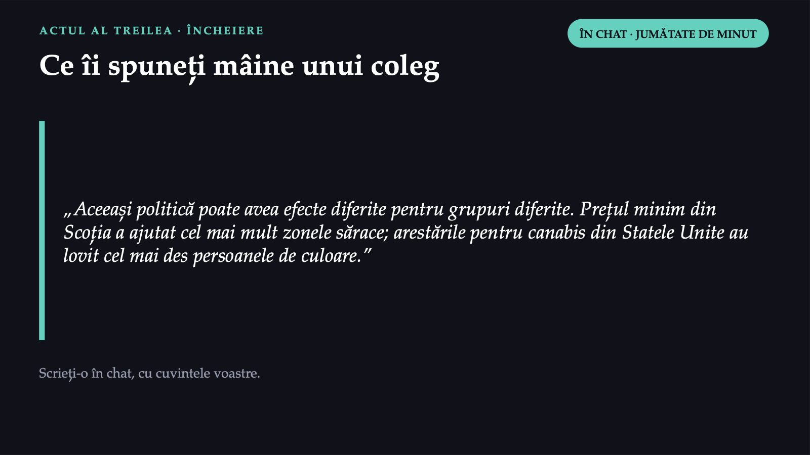
43 / 46Încheiem actul al treilea cu fraza pentru colegul de mâine: aceeași politică poate avea efecte diferite pentru grupuri diferite. Prețul minim din Scoția a ajutat cel mai mult zonele sărace; arestările pentru canabis din Statele Unite au lovit cel mai des persoanele de culoare. Scrieți-o în chat, cu cuvintele voastre.
Ce faceți diferit de mâine
![ÎN PRACTICĂ · DOMNUL M., ÎNCĂ O DATĂ Ce faceți diferit de mâine 1 Nu vă opriți la „beți zilnic?”. Întrebați și cât bea pacientul într-o zi în care bea. 2 „Beau ca toată lumea”, ca domnul M.: nu liniștiți automat. Contează tiparul și condițiile în care trăiește. 3 „Cel mai mortal drog”: mai mortal decât celelalte droguri, da; decât tutunul, nu. 4 O cifră de decese „atribuibile”: căutați anul, sursa și intervalul de incertitudine. 5 O politică de droguri sau de alcool: pe cine ajută și pe cine lovește mai mult?](diapozitive/C05/044.jpg) 44 / 46
44 / 46Cinci lucruri pe care le puteți face diferit de mâine. Primul: când întrebați un pacient despre alcool, nu vă opriți la întrebarea dacă bea zilnic; întrebați și cât bea într-o zi în care bea, pentru că în România unul din nouă adulți bea excesiv la o singură ocazie în fiecare săptămână. Al doilea: la „beau ca toată lumea”, nu liniștiți automat; riscul depinde și de tiparul consumului, și de condițiile în care trăiește. Al treilea: alcoolul este mai mortal decât celelalte droguri, în afară de tutun, dar nu mai mortal decât tutunul. Al patrulea: la o cifră de decese atribuibile, căutați anul, sursa și intervalul de incertitudine. Al cincilea: la orice politică, întrebați pe cine ajută și pe cine lovește mai mult. Primul pacient care vă spune că bea ca toată lumea poate fi domnul M.
Domnul M., cei doi frați, Scoția
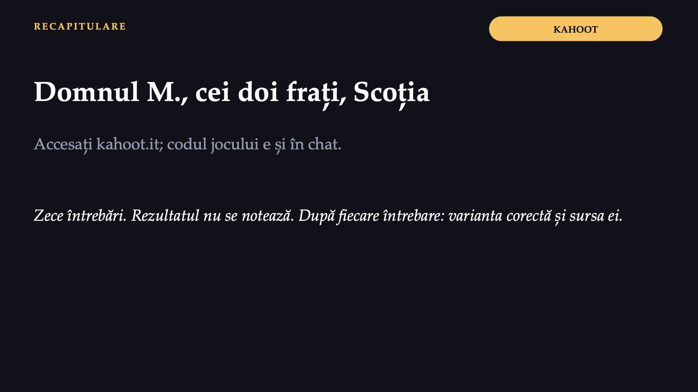
45 / 46Recapitulăm cu un Kahoot de zece întrebări despre domnul M., cifrele lumii și ale României, paradoxul daunelor, cele 100 de puncte și prețul minim din Scoția. Codul jocului e și în chat. Rezultatul nu se notează. După fiecare întrebare vedeți varianta corectă și sursa ei.
Trei întrebări pentru titular
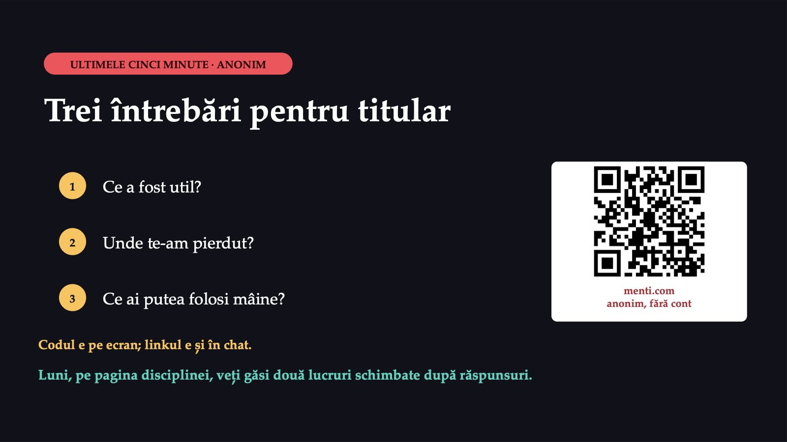
46 / 46Ultimele trei întrebări sunt anonime, pe Mentimeter: ce a fost util, unde v-am pierdut și ce ați putea folosi mâine. Linkul e și în chat. Ce scrieți se citește la sfârșitul săptămânii, iar luni, pe pagina disciplinei, veți găsi două lucruri schimbate după răspunsurile voastre. Vă mulțumesc pentru munca de azi.
Săgeți sau spațiu: navigare · O: vedere de ansamblu · N: notele prezentatorului · F: ecran complet · Esc: închidere